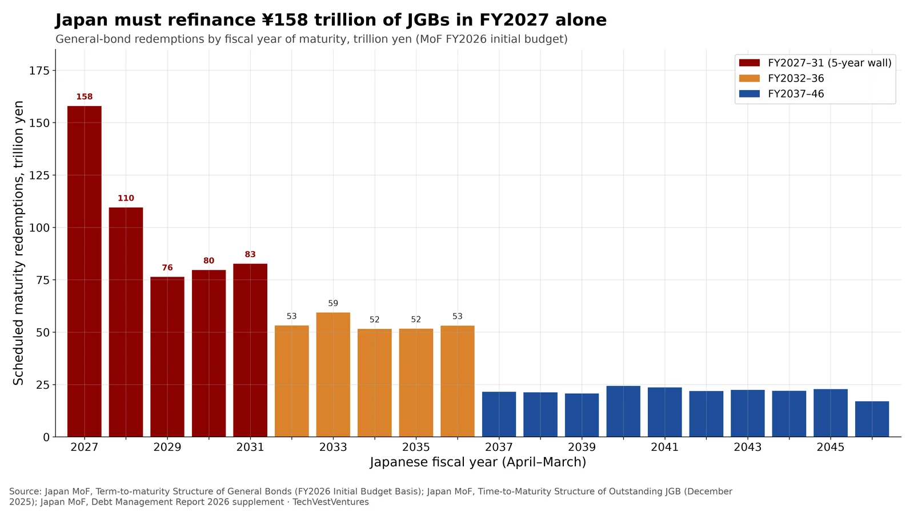

Q7. Japan Maturity Wall

Scheduled maturity redemptions of Japanese government general bonds, FY2026 initial-budget basis (Ministry of Finance, billion-yen table converted to trillion yen). FY2027 redemptions are ¥158.0 trillion, then ¥109.5T (FY2028), ¥76.3T (FY2029), ¥79.7T (FY2030) and ¥82.7T (FY2031). The five years FY2027–31 total ¥506.1 trillion, 44% of the ¥1,145.4 trillion stock in this table. The next five years (FY2032–36) add another ¥268.8T. A separate MoF chart of the outstanding JGB stock at end-December 2025 puts that stock at ¥1094.49 trillion, with an average remaining maturity of 9 years and 5 months.
- FY2027’s ¥158.0 trillion is 1.4× FY2028 and about 7× a typical year in the 2040s (around ¥22T).
- Two-thirds of the table (68%, ¥775.0T) matures by the end of FY2036.
- End-December 2025 outstanding JGBs were ¥1094.49T, a slightly smaller stock than the FY2026-budget-basis total because the budget table includes planned FY2026 issuance.
Note: Japanese fiscal years run April–March (FY2027 is April 2027–March 2028). Figures are scheduled redemptions of general bonds on the FY2026 initial budget basis; further issuance of bonds that mature inside the window will raise later totals. The table does not separately identify holdings by the Bank of Japan, so it is a gross refinancing wall, not the amount that must be placed with private investors.
Sources: Japan MoF, Term-to-maturity Structure of General Bonds (FY2026 Initial Budget Basis) Japan MoF, Time-to-Maturity Structure of Outstanding JGB (December 2025) Japan MoF, Debt Management Report 2026 supplement